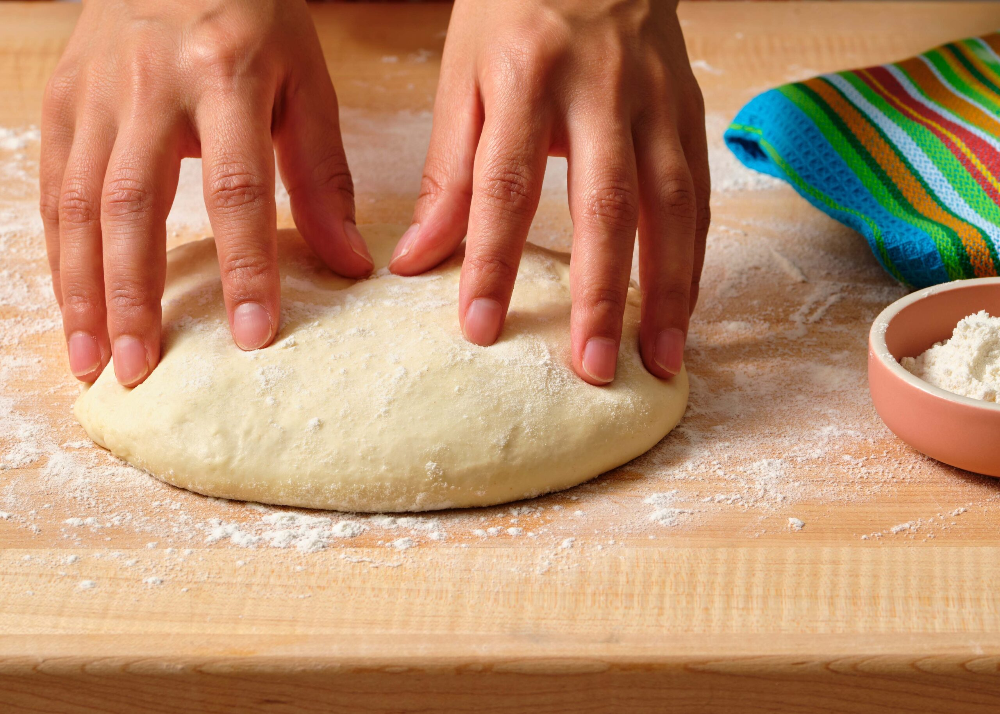

My Homemade Pizza

Everyones Favorite
Everyone in my family loves pizza. For a long time
it was all anyone would eat other than pizza rolls or Chicken
nuggets. At first when my kids were young I would get
dough pouches and make everything from a box, not thinking much
about ingredients but as the kids got older I wanted something
different. I didn't like that it all came from a box
and I wanted to perfect things a little so I found a good
dough recipe and made everyones favorite that much better.
Ingredients
- 1 packet platinum instant yeast
(2 1/4 teaspoon or 1/3 of a 2 ounce block
(so .66 ounces of cake yeast)
- ~350 grams of water or 1 1/2 cups
* if using same day use warm water
(105-115 degrees F/40-46 degrees C).
If fermenting overnight in the fridge
use cold water
- 10 grams or 2 1/4 teaspoon olive oil
- ~475 grams or 3 – 3 1/2 cups 00 Pizza flour
or any high gluten bread flour, plus extra as needed
- 8 grams (1.4 teaspoon) sea salt
Instructions
- If using Active Dry yeast, you need to proof
it first. Proof the yeast by pouring the yeast
into the water in a bowl of your stand mixer and
gently stir until the yeast dissolves.
*Cake yeast you make have to break up with your
fingers. If using Instant Yeast, you do not need
to proof it. Just add the water and yeast to the bowl
and skip to step 3.
- Let the yeast and water stand until foamy, about
5 minutes*. If using cold water, just mix and move
to the next step as the yeast won’t quite bloom
with cold water.
- Once the yeast has bloomed (if you’re using cake
or active dry yeast), add in the flour and fit your
mixer with a dough hook. Mix on low just until loosely
combined. Add in the salt while the mixer is running
stopping if need be to scrape down the sides. After 3
minutes of mixing, drizzle in the oil.
- Mix until a soft, smooth elastic ball form; ~8-10
minutes. The dough should pull away from the sides
of the bowl but still be wet/tacky to the touch. If
need be add a tablespoon of flour or so to help combine.
If it’s too dry, you may need to add a few tablespoon
of water. Remove the dough from the bowl and place it
on a very lightly floured surface. Give it a few kneads
to form the dough into a smooth ball tucking the ‘ends’
underneath.
- Allow the dough to rest, covered for 30 minutes. After
30 minutes, using very lightly floured hands, knead
the dough gently by hand just to smooth it out and divide
into smaller portions. If using the same day, divide
the dough in half, shape as balls, and put in 2 separate
bowls (covered) and allow to rise until doubled in size;
about 60-90 minutes. *If you’re placing in the fridge,
divide into 2 equal-sized balls, and place in 2 bowls
covered with plastic wrap (just be sure it has enough
room to rise) and refrigerate (covered) between 48-72
hours. The slow cold rise will help build the flavors.
*My personal favorite
- Place one rack on the lower third of your oven. On
that place a pizza stone. It’s recommended you use 2
when you bake pizza. Place another rack on the upper
ledge and place the 2nd pizza stone there. When ready
to use, preheat the oven to 550F. If you’ve had the
dough in the fridge, bring out to room temperature at
least an hour prior to baking. If you use a pizza stone,
follow the manufacturer’s instructions on heating that
up.
- Stretch out your dough on a very lightly floured surface
(trying not to work it too much as you want the ‘gas’
left it in – that’s what causes the bubbles and crispy
airiness of the dough).
- Place the dough in a pizza pan, directly on a Pizza
Stone stone or on a Pizza Screen – whatever your
preferred method.
- Top with your favorite toppings and bake for 8-12
minutes depending on what you’re cooking it on.